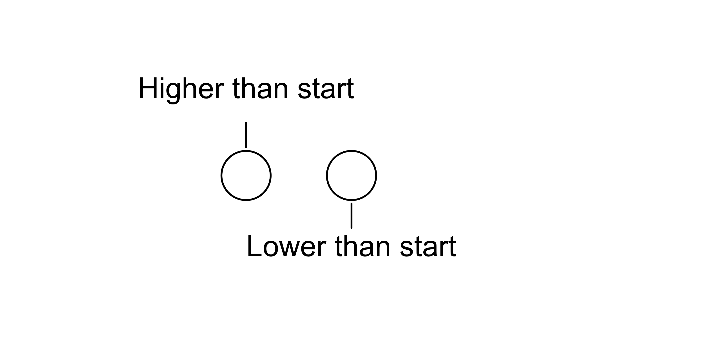

Cómo crear leyendas personalizadas en tus gráficos utilizando ggplot2
Cada tanto, cuando tengo tiempo libre, me siento a revisar artículos y noticias. En Twitter, me topé con el siguiente artículo del Wall Street Journal, titulado ‘The Rough Years That Turned Gen Z Into America’s Most Disillusioned Voters’1. Este habla sobre cómo lo que se puede entender como generación Z tiene menores expectativas de tener una carrera, entre otras cuestiones. Pero lo que me llamó la atención inmediatamente fue este gráfico tan curioso.
Resulta que justo en las últimas semanas, el blog de tidyverse.org publicaba algunas de las novedades de ggplot2 3.5, entre las que se encuentran el poder agregar leyendas personalizadas utilizando el paquete grid. Ahora, entonces, me entra la duda de si es posible recrear este gráfico usando código de R, vamos a intentarlo.
Este no es un tutorial; el objetivo no es que entiendas cómo funciona todo, ya que el código es algo largo, sino que lo tengas como referencia y exploremos juntos las capacidades del paquete.
Paso 1 : Cargar las dependencias
Paso 2: Crear la primer leyenda
El paquete grid nos permite crear gráficos, pero a diferencia de ggplot2, grid nos provee de funciones más de bajo nivel, como dibujar un círculo, una línea, un rectángulo, lo cual nos da mucha libertad para componer estos elementos de la forma en que queramos.
Una de las mejores lecturas para comprender el funcionamiento del paquete grid y su relación con ggplot2 es el libro R Graphics, Second Edition, de Paul Murrell, el autor del paquete grid.
Usaremos las funciones circleGrob, segmentsGrob y textGrob para replicar la primera leyenda, que en la Figura 1 se encuentra a la derecha.
circulos <- circleGrob(
r = 0.07,
x = c(0.5, 0.35),
y = c(0.5,0.5),
gp = gpar(lwd = 1)
)
lineas <- segmentsGrob(
x0 = c(0.5,0.35),
x1 = c(0.5,0.35),
y0 = c(0.35,0.65),
y1 = c(0.42,0.58),
gp = gpar(lwd = 1)
)
texto <- textGrob(
label = c("Lower than start","Higher than start"),
x = c(0.5,0.35),
y = c(0.3, 0.75),
gp = gpar(lwd = 2, fontsize = 12),
)
legend1 <- gTree(children = gList(circulos, lineas,texto))
grid.draw(legend1)
No está mal, se parece bastante. Ahora vamos a utilizar la función guides y la nueva función guide_custom para agregar este objeto llamado legend1 a un gráfico de ggplot2. Además, se hacen algunos ajustes de tamaño y márgenes con la función theme.

Paso 3: Crear la segunda leyenda
Vemos que, a diferencia de la primera leyenda, esta segunda Figura 1, que se encuentra a la izquierda del gráfico, es un poco más compleja; tiene más formas, textos y colores. Sin embargo, aunque requiere más código, no es en sí una tarea complicada.
rect1 <- roundrectGrob(
r= unit(0.5, "snpc"),
x = 0.10,
y = 0.5,
width = 0.2,
height = 0.065,
gp = gpar(lty = 0, fill = "#b4d6f0")
)
rect2 <- roundrectGrob(
r = unit(0.5, "snpc"),
x = 0.325,
y = 0.5,
width = 0.25,
height = 0.065,
gp = gpar(lty = 0, fill = "#76bbe8")
)
rect3 <- roundrectGrob(
r = unit(0.5, "snpc"),
x = 0.575,
y = 0.5,
width = 0.25,
height = 0.065,
gp = gpar(lty = 0, fill = "#2598dd")
)
rect4 <- roundrectGrob(
r = unit(0.5, "snpc"),
x = 0.825,
y = 0.5,
width = 0.25,
height = 0.065,
gp = gpar(lty = 0, fill = "#673c8e")
)
point1 <- circleGrob(
r = 0.05,
x = c(0.02,0.2,0.45,0.70),
y = c(0.5,0.5,0.5,0.5,0.5),
gp = gpar(lty = 0, fill = c("#b2d9f9","#559dd7","#1d70c9","#09217a"))
)
stick1 <- segmentsGrob(
x0 =c(0.02,0.2,0.45,0.70),
x1 = c(0.02,0.2,0.45,0.70),
y0 = c(0.65,0.42,0.65,0.42),
y1 = c(0.58,0.35,0.58,0.35),
gp = gpar(lwd = 2)
)
label1 <- textGrob(
label = c("Baby\nBoomers","Gen X", "Milenials", "Gen Z"),
x = c(0.02,0.2,0.45,0.70),
y = c(0.8,0.3, 0.75, 0.3),
gp = gpar(lwd = 2, fontsize = 12, lineheight = 0.7))
circle1 <- circleGrob(
r = 0.080,
x = c(0.02,0.2,0.45,0.70),
y = c(0.5,0.5,0.5,0.5),
gp = gpar(lty = 1, fill = NA)
)
legend2 <- gTree(children = gList(rect1, rect2, rect3,rect4,
point1,stick1,label1,circle1))
grid.draw(legend2)
Ahora, al igual que en el paso anterior, vamos a agregarlo a un gráfico con ggplot2 para verificar cómo se ve.
Al ajustar la dimensión de los elementos, es mejor verificarla contra la versión que ya está integrada en el plot de ggplot2, porque pueden variar mucho.

Paso 4: Necesitamos los datos
Llega el momento de replicar el gráfico y necesitamos datos. Para esto, después de varios intentos fallidos y un dolor de cabeza de por medio, me topé con esta herramienta: plot digitizer, que nos facilita el pasar de un plot ya creado a los datos.
A continuación, mucho código de poco valor pero necesario para obtener los datos.
Código
df1 <- tibble::tribble(
~fecha, ~valor,
1975.99610136452, 30.306338028169,
1976.77582846004, 31.4007042253521,
1978.49122807018, 31.9478873239437,
1978.72514619883, 33.2767605633803,
1979.19298245614, 34.3711267605634,
1979.738791423, 36.0908450704225,
1980.36257309942, 37.1070422535211,
1981.37621832359, 36.0908450704225,
1982.31189083821, 35.7,
1983.63742690058, 36.4035211267606,
1984.5730994152, 37.2633802816901,
1985.27485380117, 38.9049295774648,
1985.82066276803, 40.0774647887324,
1986.6783625731, 42.7352112676056,
1986.28849902534, 41.3281690140845,
1987.30214424951, 44.2204225352113,
1987.92592592593, 45.3929577464789,
1989.56335282651, 45.9401408450704,
1990.49902534113, 47.7380281690141,
1989.95321637427, 46.956338028169,
1991.2007797271, 49.3014084507042,
1991.66861598441, 51.0211267605634,
1992.05847953216, 51.9591549295775,
1994.24171539961, 54.2260563380282,
1994.24171539961, 54.2260563380282,
1995.56725146199, 54.8514084507042,
1995.56725146199, 54.8514084507042,
1996.50292397661, 55.7112676056338,
1997.90643274854, 56.2584507042254,
1998.99805068226, 56.1,
2000.40155945419, 55.7112676056338,
2000.40155945419, 55.7112676056338,
2001.57115009747, 56.6492957746479,
2003.05263157895, 56.3366197183098,
2004.06627680312, 55.9457746478873,
2004.06627680312, 55.9457746478873,
2005.3918128655, 56.8056338028169,
2006.48343079922, 56.0239436619718,
2006.48343079922, 56.0239436619718,
2007.34113060429, 57.1964788732394,
2008.19883040936, 58.369014084507,
2009.21247563353, 58.9943661971831,
2010.77192982456, 59.0725352112676,
2011.86354775828, 58.1345070422535,
2012.56530214425, 56.9,
2013.34502923977, 56.4147887323944,
2013.34502923977, 56.4147887323944,
2014.82651072125, 57.430985915493,
2016.85380116959, 56.8056338028169,
2016.85380116959, 56.8056338028169,
2018.02339181287, 55.5549295774648,
2018.49122807018, 54.3042253521127,
2018.80311890838, 53.1316901408451,
2018.80311890838, 53.1316901408451,
2019.19298245614, 52.506338028169,
2019.19298245614, 52.506338028169,
2020.28460038986, 51.880985915493,
2020.28460038986, 51.880985915493,
2020.75243664717, 50.3957746478873,
2020.75243664717, 50.3957746478873,
2020.90838206628, 49.2232394366197,
2020.90838206628, 49.2232394366197,
2021.06432748538, 48.1288732394366,
2021.06432748538, 48.1288732394366,
2022, 46.8
)|>
mutate(
fecha = round(fecha),
fecha = ymd(paste0(fecha,"-01-01"))
) |>
summarise(
valor = round(mean(valor),1),
.by = fecha
) |>
mutate(
pregunta = "Expect graduate or\nprofessional degree"
)Código
df2 <- tibble::tribble(
~fecha, ~valor,
1976.40358744395, 48.1413978494624,
1976.83408071749, 49.2682795698925,
1977.55156950673, 50.1134408602151,
1978.62780269058, 50.6064516129032,
1979.20179372197, 51.5924731182796,
1979.34529147982, 52.5784946236559,
1979.63228699552, 53.6349462365591,
1979.99103139013, 54.902688172043,
1980.42152466368, 55.8887096774194,
1981.13901345291, 55.9591397849462,
1982, 56.1,
1983.5067264574, 54.1279569892473,
1984.7264573991, 53.9870967741935,
1985.30044843049, 54.902688172043,
1985.87443946188, 56.1704301075269,
1986.59192825112, 57.297311827957,
1986.87892376682, 58.2129032258065,
1987.7399103139, 59.058064516129,
1988.60089686099, 59.9736559139785,
1989.31838565022, 60.3962365591398,
1989.82062780269, 61.7344086021505,
1990.25112107623, 62.9317204301075,
1991.54260089686, 63.4247311827957,
1992.04484304933, 64.9741935483871,
1992.83408071749, 65.8193548387097,
1993.98206278027, 66.1010752688172,
1995.56053811659, 66.241935483871,
1996.42152466368, 67.2983870967742,
1997.13901345291, 67.8618279569892,
1998 , 69.2,
1999.79372197309, 69.763440860215,
2000.22421524664, 70.7494623655914,
2001.51569506726, 70.4677419354839,
2002.66367713004, 69.833870967742,
2003.38116591928, 68.636559139785,
2004.74439461883, 68.7069892473118,
2005.39013452915, 69.763440860215,
2006.32286995516, 68.7774193548387,
2007.61434977578, 68.9182795698925,
2008.2600896861, 68.1435483870968,
2009.19282511211, 68.7774193548387,
2010.48430493274, 68.3548387096774,
2011, 68.4252688172043,
2012. , 61.1,
2013.42600896861, 64.4532258064516,
2013.64125560538, 65.3263440860215,
2013.78475336323, 64.1994623655914,
2013.92825112108, 62.7908602150538,
2014.21524663677, 61.3822580645161,
2015.43497757848, 61.9456989247312,
2016.86995515695, 62.086559139785,
2018.37668161435, 62.2274193548387,
2019.23766816144, 61.3822580645161,
2019.81165919282, 60.255376344086,
2020.52914798206, 58.6354838709677,
2021.31838565022, 57.0155913978495,
2022 , 52.1
) |>
mutate(
fecha = round(fecha),
fecha = ymd(paste0(fecha,"-01-01"))
) |>
summarise(
valor = round(mean(valor),1),
.by = fecha
) |>
mutate(
pregunta = "Expect professional job"
)Código
df3 <- tibble::tribble(
~fecha, ~valor,
1976.04830917874, 47.2409090909091,
1977.05314009662, 48.4,
1978.21256038647, 49.25,
1979.75845410628, 49.0181818181818,
1980.45410628019, 51.0272727272727,
1981.45410628019, 53.0272727272727,
1982, 53.5,
1983.46859903382, 55.8954545454545,
1984.24154589372, 57.1318181818182,
1984.70531400966, 58.2909090909091,
1985.71014492754, 58.7545454545455,
1986.56038647343, 59.7590909090909,
1987.33333333333, 60.9954545454545,
1988.49275362319, 61.8454545454545,
1989.42028985507, 62.4636363636364,
1990.27053140097, 62.9272727272727,
1991.42995169082, 63.6227272727273,
1992.3574879227, 62.6181818181818,
1993.2077294686, 61.3045454545455,
1994.21256038647, 60.6863636363636,
1995.44927536232, 60.3772727272727,
1996.1, 60.6090909090909,
1998, 62.0,
1999.77777777778, 63.0818181818182,
2000.93719806763, 63.6227272727273,
2001.86473429952, 62.5409090909091,
2002.86956521739, 61.6136363636364,
2003.25603864734, 60.3772727272727,
2003.71980676329, 59.1409090909091,
2005.11111111111, 59.1409090909091,
2006.27053140097, 59.2954545454545,
2007.42995169082, 58.7545454545455,
2008.51207729469, 58.1363636363636,
2009, 57.1318181818182,
201, 57.1318181818182,
2011.1, 56.6681818181818,
2012, 59.6,
2013.38164251208, 58.7545454545455,
2013.45893719807, 59.6045454545455,
2014.7729468599, 58.9863636363636,
2015.54589371981, 57.9818181818182,
2016.55072463768, 56.8227272727273,
2017.71014492754, 54.8909090909091,
2017.71014492754, 54.8909090909091,
2018.48309178744, 53.5772727272727,
2019.10144927536, 52.4181818181818,
2019.10144927536, 52.4181818181818,
2020.02898550725, 52.7272727272727,
2020.02898550725, 52.7272727272727,
2020.4154589372, 53.8863636363636,
2021, 54.6,
2022, 54.6
)|>
mutate(
fecha = round(fecha),
fecha = ymd(paste0(fecha,"-01-01"))
) |>
summarise(
valor = round(mean(valor),1),
.by = fecha
) |>
mutate(
pregunta = "Expect own more\nthan parents"
)Código
library(tidyverse)
df <- bind_rows(df1, df2, df3) |>
mutate(
generacion = case_when(
between(year(fecha),1976,1981) ~ "Baby\nBoomers",
between(year(fecha),1982,1998) ~ "Gen X",
between(year(fecha),1999,2010) ~ "Milenials",
between(year(fecha),2011,2023) ~ "Gen Z",
.default = NA_character_
)
)
df <- df |>
mutate(
label = if_else(
condition = year(fecha) %in% c(1982, 1998,2011,2022),
true = paste0(valor,"%"),
false = NA
),
pregunta = fct_relevel(pregunta,"Expect own more\nthan parents", after = Inf)
) |>
mutate(
dir_label = if_else(
condition = tail(valor,1) - head(valor,1) < 0,
true = "abajo",
false = "arriba"
),
.by = c(pregunta, generacion)
) Paso 5: Crea el gráfico final
Estuve varios días pensando en cómo explicar este código de forma sencilla y mi conclusión, en la que puedo estar equivocado perfectamente, es que si hay una explicación, sería muy larga para un post de este blog. Por lo tanto, hagamos un trato: por ahora, intenta ejecutar el código y experimenta con él. En futuras entregas, iremos agregando gráficos más simples que te ayudarán a entender lo que se necesita para generar este plot.
ggplot(
data = df,
mapping = aes(
x = fecha,
y = valor,
color = generacion,
label = label,
group = 1
)
) +
labs(
title = "Future outcome expectations among U.S. 12th graders",
y = "",
x = ""
) +
geom_line(linewidth = 2.5, lineend = "round") +
geom_point(
data = filter(df, !is.na(label)),
mapping = aes(
color = stage(
start = generacion,
after_scale = darken(color, 0.2)
)
),
size = 2.5
) +
geom_point(
data = filter(df, !is.na(label)),
color = "black",
fill = NA,
shape = 21,
size = 5
) +
geom_text_repel(
direction = "y",
color = "black",
nudge_y = if_else(
df$dir_label == "arriba",
true = 8,
false = -8
),
hjust = 0.5,
fontface = "bold",
size = 4.5,
point.padding = 0.7
) +
scale_color_manual(
values = c(
"Baby\nBoomers" = "#b4d6f0",
"Gen X" = "#76bbe8",
"Milenials" = "#2598dd",
"Gen Z" = "#673c8e"
),
guide = "none"
) +
scale_y_continuous(
breaks = c(25,50,75),
expand = expand_scale(mult = c(0.1,0.25)),
labels = \(x) paste0(x,"%")
) +
scale_x_date(
labels = format_date,
minor_breaks = ymd("1976-01-01") + years(0:45),
guide = "axis_minor",
expand = expand_scale(mult = c(0.05,0.1))
) +
facet_wrap(~pregunta)+
guides(
custom2 = guide_custom(
width = unit(4,"cm"),
height = unit(3,"cm"),
grob = legend1,
order = 2
),
custom = guide_custom(
width = unit(5,"cm"),
height = unit(3,"cm"),
grob = legend2,
order = 1
)) +
theme_minimal(base_size = 16)+
theme(
legend.position = "top",
legend.justification = "center",
legend.margin = margin(t = -5, b = -30,0),
plot.margin = margin(10,10,10,10),
plot.title = element_text(
face = "bold",
hjust = 0.45,
size = 16,
margin = margin(b = 15, t = 10)
),
strip.text = element_text(
size = 16,
margin = margin(b = 5, t = 15)),
panel.grid.major.x = element_blank(),
panel.grid.minor.x = element_blank(),
panel.grid.minor.y = element_blank(),
axis.ticks.x = element_line(),
axis.ticks.length = unit(5,"pt"),
ggh4x.axis.ticks.length.minor = rel(0.5)
)Conclusión
Aunque hay diferencias notables, como el uso de las tipografías, colores y otros detalles, creo que logramos una similitud razonable. El gráfico original está hecho con la herramienta Datawrapper, muy usada por periodistas y una excelente alternativa si te quieres evitar tanto código, pero… como dije al inicio de este post, solo buscamos explorar las capacidades del paquete.
Notas
Restuccia, Andrew, y Eliza Collins. 2024. “The Rough Years That Turned Gen Z Into America’s Most Disillusioned Voters.” The Wall Street Journal, March 15. https://archive.ph/0E2Bw (Leer publicación).↩︎